第 10 章
图像的几何变换
本章共 5 个小节 · 缩放、翻转、仿射、透视、重映射
图像的几何变换会改变图像的大小、方向、外形或像素对应关系。相关数学并不简单，
但 OpenCV 已经把矩阵计算与插值流程封装到函数中；掌握函数参数、坐标顺序和输出尺寸，
就能完成缩放、翻转、仿射、透视和自定义重映射等效果。参考原书第 10-2 页。
10-1
图像缩放效果
cv2.resize() 用来重新设定图像尺寸。可以直接给出目标尺寸 dsize，
也可以把 dsize 设为 None，再用 fx 与 fy
指定水平和垂直方向的缩放比例。
dst = cv2.resize(src, dsize, fx, fy, interpolation)
| 参数 | 说明 |
|---|
src | 原始图像。 |
dsize | 目标尺寸，格式是 (width, height)，不是 (height, width)。 |
fx / fy | 水平方向与垂直方向的缩放比例。 |
interpolation | 缩放时的插值方法，影响边缘平滑度与速度。 |
| 插值常量 | 用途 |
|---|
cv2.INTER_NEAREST | 最近邻插值，速度快，但放大时容易有块状边缘。 |
cv2.INTER_LINEAR | 双线性插值，默认方法，通常适合一般缩放。 |
cv2.INTER_CUBIC | 双三次插值，放大时边缘更平滑，但计算较慢。 |
cv2.INTER_AREA | 缩小时常用，能得到较稳定的重采样效果。 |
cv2.INTER_LANCZOS4 | Lanczos 插值，会在 x、y 方向参考更多邻近点。 |
程序实例 ch10_1.py：使用 dsize 指定新尺寸
src = cv2.imread("southpole.jpg")
width = 300
height = 200
dsize = (width, height)
dst = cv2.resize(src, dsize)
程序实例 ch10_2.py：使用 fx 与 fy 指定缩放比例
src = cv2.imread("southpole.jpg")
dst = cv2.resize(src, None, fx=0.5, fy=1.1)
print(f"src.shape = {src.shape}")
print(f"dst.shape = {dst.shape}")
重点
shape 输出顺序是 (height, width, channels)，而 dsize 输入顺序是 (width, height)。
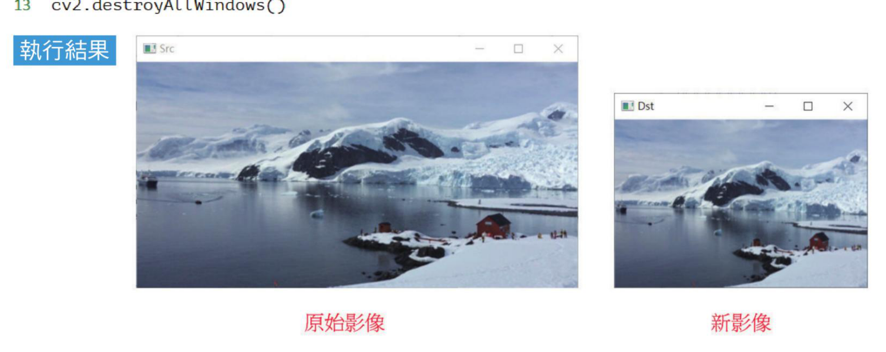
使用 dsize=(300, 200) 缩放图像，参考原书第 10-3 页。
10-2
图像翻转
cv2.flip() 根据 flipCode 翻转图像。垂直翻转可理解为沿 x 轴上下翻转，
水平翻转可理解为沿 y 轴左右翻转；如果 flipCode 为负数，则两个方向同时翻转。
参考原书第 10-4 至 10-6 页。
dst = cv2.flip(src, flipCode)
| flipCode | 效果 |
|---|
0 | 垂直翻转，上下颠倒。 |
正值，例如 1 | 水平翻转，左右颠倒。 |
负值，例如 -1 | 同时水平与垂直翻转。 |
程序实例 ch10_3.py：一次比较三种翻转
src = cv2.imread("python.jpg")
dst1 = cv2.flip(src, 0)
dst2 = cv2.flip(src, 1)
dst3 = cv2.flip(src, -1)
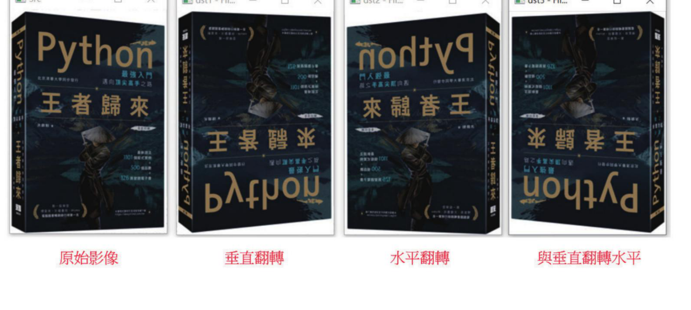
从左到右为原始图像、垂直翻转、水平翻转、水平与垂直翻转，参考原书第 10-6 页。
10-3
图像仿射
仿射变换是在二维平面上移动图像坐标。变换之后，直线仍是直线，平行线仍保持平行。
常见仿射效果包括平移、旋转和倾斜。OpenCV 使用 2 行 3 列的矩阵 M
描述仿射关系，再交给 cv2.warpAffine() 生成新图像。参考原书第 10-7 至 10-14 页。
dst = cv2.warpAffine(src, M, dsize, flags, borderMode, borderValue)
| 参数 | 说明 |
|---|
M | 2x3 仿射矩阵，不同矩阵会得到不同的平移、旋转或倾斜结果。 |
dsize | 输出图像尺寸，格式仍是 (width, height)。 |
flags | 插值方法。若包含 cv2.WARP_INVERSE_MAP，表示 M 是逆变换矩阵。 |
borderMode | 边界像素处理方式，默认是常量填充。 |
borderValue | 边界填充值，默认是 0，所以空白区域通常显示为黑色。 |
10-3-3 图像平移
平移就是把图像内容平行移动。书中示例把图像向右移动 x=50、向下移动 y=100，
因此矩阵的第三列就是水平和垂直位移量。
程序实例 ch10_4.py：平移 x=50、y=100
height, width = src.shape[0:2]
M = np.float32([[1, 0, 50],
[0, 1, 100]])
dsize = (width, height)
dst = cv2.warpAffine(src, M, dsize)
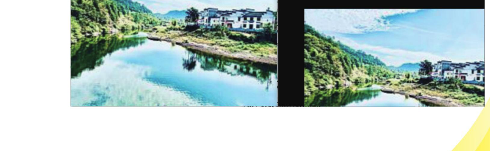
右移 50 像素、下移 100 像素后，空出的区域以黑色填充，参考原书第 10-9 页。
10-3-4 图像旋转
旋转同样通过仿射矩阵完成。cv2.getRotationMatrix2D() 可根据旋转中心、角度和缩放比生成矩阵。
角度为正值时逆时针旋转，负值时顺时针旋转。
M = cv2.getRotationMatrix2D(center, angle, scale)
程序实例 ch10_5.py：逆时针与顺时针旋转 30 度
height, width = src.shape[0:2]
dsize = (width, height)
M = cv2.getRotationMatrix2D((width / 2, height / 2), 30, 1)
dst1 = cv2.warpAffine(src, M, dsize)
M = cv2.getRotationMatrix2D((width / 2, height / 2), -30, 1)
dst2 = cv2.warpAffine(src, M, dsize)
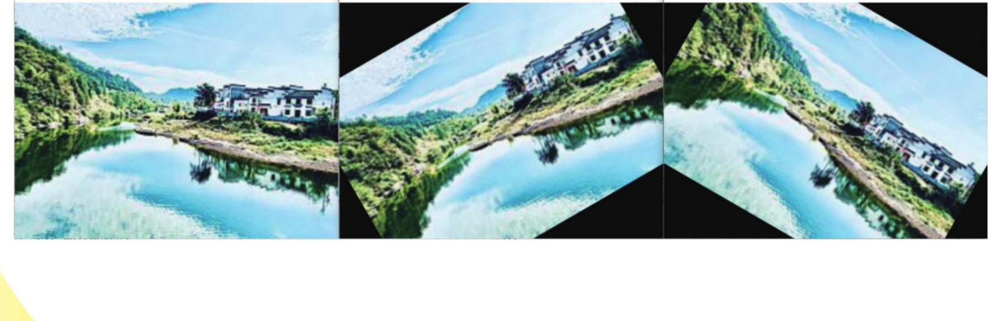
原始图像、逆时针 30 度、顺时针 30 度的比较，参考原书第 10-10 页。
10-3-5 图像倾斜
倾斜可以看成把矩形映射成平行四边形。因为仿射会保持平行性，所以只要指定来源图像的 3 个点，
以及目标图像中对应的 3 个点，就能计算矩阵。OpenCV 使用 cv2.getAffineTransform()
根据这两组三点坐标产生 M。
M = cv2.getAffineTransform(src_points, dst_points)
程序实例 ch10_6.py：目标图像向右上方倾斜
srcp = np.float32([[0, 0], [width - 1, 0], [0, height - 1]])
dstp = np.float32([[30, 0], [width - 1, 0], [0, height - 1]])
M = cv2.getAffineTransform(srcp, dstp)
dst = cv2.warpAffine(src, M, (width, height))
程序实例 ch10_7.py：目标图像向左上方倾斜
srcp = np.float32([[0, 0], [width - 1, 0], [0, height - 1]])
dstp = np.float32([[0, 0], [width - 30, 30], [30, height - 1]])
M = cv2.getAffineTransform(srcp, dstp)
dst = cv2.warpAffine(src, M, (width, height))
程序实例 ch10_8.py：倾斜时更改输出宽度
srcp = np.float32([[0, 0], [width - 1, 0], [0, height - 1]])
dstp = np.float32([[80, 0], [width - 1, 0], [0, height - 1]])
M = cv2.getAffineTransform(srcp, dstp)
dst = cv2.warpAffine(src, M, (width + 80, height))
程序实例 ch10_9.py：使用 AB 点倾斜线重新设计 ch10_8.py
srcp = np.float32([[0, 0], [width - 1, 0], [0, height - 1]])
dstp = np.float32([[80, 0], [width - 1, 80], [0, height - 1]])
M = cv2.getAffineTransform(srcp, dstp)
dst = cv2.warpAffine(src, M, (width + 80, height + 80))
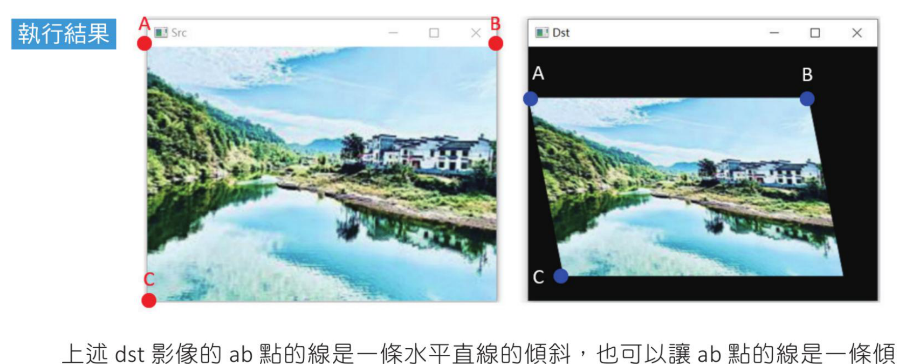
改变目标图像的 A、B、C 三个对应点即可得到不同倾斜效果，参考原书第 10-14 页。
10-4
图像透视
透视变换可以把一个矩形映射成任意四边形，因此适合处理由拍摄角度造成的远近变化。
它不像仿射那样只需要 3 个对应点，而是需要来源图像和目标图像各 4 个点。
先用 cv2.getPerspectiveTransform() 取得透视矩阵，再用
cv2.warpPerspective() 产生目标图像。参考原书第 10-14 至 10-16 页。
M = cv2.getPerspectiveTransform(src_points, dst_points)
dst = cv2.warpPerspective(src, M, dsize, flags, borderMode, borderValue)
程序实例 ch10_10.py：四点透视变换
srcp = np.float32([[0, 0], [width - 1, 0],
[0, height - 1], [width - 1, height - 1]])
dstp = np.float32([[150, 0], [width - 150, 0],
[0, height - 1], [width - 1, height - 1]])
M = cv2.getPerspectiveTransform(srcp, dstp)
dst = cv2.warpPerspective(src, M, (width, height))
比较
仿射用 3 个点，保持平行线；透视用 4 个点，可以让平行线在视觉上收敛，形成近大远小的效果。
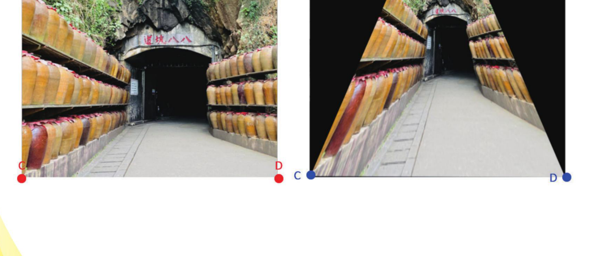
把目标图像上方收窄，得到由下方向前观察的透视效果，参考原书第 10-16 页。
10-5
重映射
cv2.remap() 是自定义映射函数。前面的仿射和透视主要由矩阵定义坐标关系；
重映射则直接给出每一个目标像素应该到来源图像的哪个坐标取值，因此可用于复制、翻转、扭曲、
局部变形和特殊缩放。参考原书第 10-17 页。
dst = cv2.remap(src, map1, map2, interpolation, borderMode, borderValue)
| 参数 | 说明 |
|---|
map1 / mapx | 目标图像每个像素对应的来源 x 坐标，也就是 column 坐标。 |
map2 / mapy | 目标图像每个像素对应的来源 y 坐标，也就是 row 坐标。 |
interpolation | 插值方法，默认常用 cv2.INTER_LINEAR；重映射不支持 INTER_AREA。 |
borderMode | 来源坐标超出边界时的像素处理方式。 |
borderValue | 边界填充值。 |
10-5-1 map1 与 map2
映射的核心是从目标图像回查来源图像：对目标图像的每个位置 (r, c)，
mapx[r, c] 保存来源图像的 x 坐标，mapy[r, c] 保存来源图像的 y 坐标。
如果所有目标像素都取来源图像的同一个坐标，就会得到一张填满同一像素值的图像。
参考原书第 10-18 页。
程序实例 ch10_10_1.py：所有目标像素都映射到同一来源坐标
mapx = np.ones(src.shape, np.float32) * 3
mapy = np.ones(src.shape, np.float32) * 2
dst = cv2.remap(src, mapx, mapy, cv2.INTER_LINEAR)
10-5-2 图像复制
复制图像时，目标图像每个像素都取来源图像同一位置：mapx[r, c] = c，
mapy[r, c] = r。矩阵示例和图像示例分别对应原书第 10-19 与 10-20 页。
程序实例 ch10_11.py：使用 remap() 执行矩阵复制
mapx = np.zeros(src.shape[:2], np.float32)
mapy = np.zeros(src.shape[:2], np.float32)
for r in range(rows):
for c in range(cols):
mapx.itemset((r, c), c)
mapy.itemset((r, c), r)
dst = cv2.remap(src, mapx, mapy, cv2.INTER_LINEAR)
程序实例 ch10_12.py：使用 remap() 执行图像复制
src = cv2.imread("southpole.jpg")
rows, cols = src.shape[:2]
mapx = np.zeros((rows, cols), np.float32)
mapy = np.zeros((rows, cols), np.float32)
for r in range(rows):
for c in range(cols):
mapx.itemset((r, c), c)
mapy.itemset((r, c), r)
dst = cv2.remap(src, mapx, mapy, cv2.INTER_LINEAR)
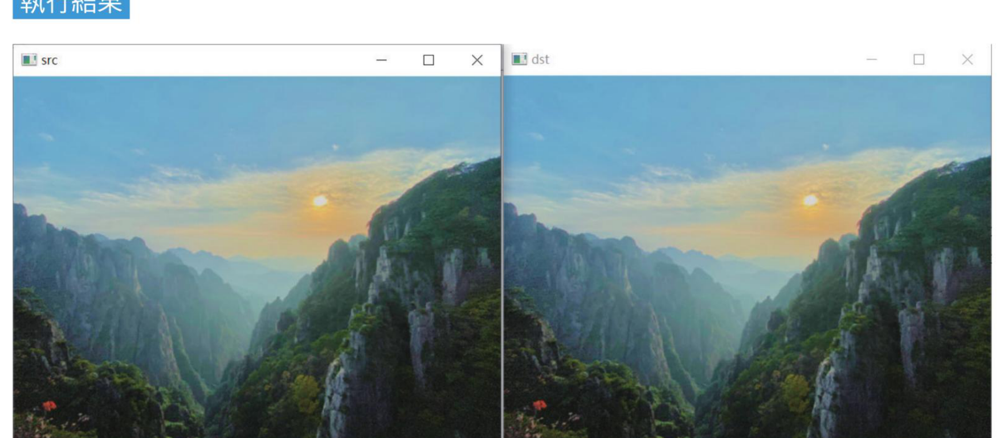
目标图像逐点回查来源图像相同坐标，结果就是完整复制，参考原书第 10-20 页。
10-5-3 与 10-5-4 翻转
用重映射做垂直翻转时，x 坐标不变，y 坐标改为 rows - 1 - r；
做水平翻转时，y 坐标不变，x 坐标改为 cols - 1 - c。
这与 cv2.flip() 的效果类似，但 remap() 显示了像素坐标如何被重新指定。
程序实例 ch10_13.py：使用 remap() 执行垂直翻转的矩阵实例
# 垂直翻转矩阵
mapx.itemset((r, c), c)
mapy.itemset((r, c), rows - 1 - r)
程序实例 ch10_14.py：使用 remap() 执行图像垂直翻转
src = cv2.imread("southpole.jpg")
rows, cols = src.shape[:2]
mapx = np.zeros((rows, cols), np.float32)
mapy = np.zeros((rows, cols), np.float32)
for r in range(rows):
for c in range(cols):
mapx.itemset((r, c), c)
mapy.itemset((r, c), rows - 1 - r)
dst = cv2.remap(src, mapx, mapy, cv2.INTER_LINEAR)
程序实例 ch10_15.py：使用 remap() 执行水平翻转的矩阵实例
# 水平翻转矩阵
mapx.itemset((r, c), cols - 1 - c)
mapy.itemset((r, c), r)
程序实例 ch10_16.py：使用 remap() 执行图像水平翻转
src = cv2.imread("southpole.jpg")
rows, cols = src.shape[:2]
mapx = np.zeros((rows, cols), np.float32)
mapy = np.zeros((rows, cols), np.float32)
for r in range(rows):
for c in range(cols):
mapx.itemset((r, c), cols - 1 - c)
mapy.itemset((r, c), r)
dst = cv2.remap(src, mapx, mapy, cv2.INTER_LINEAR)
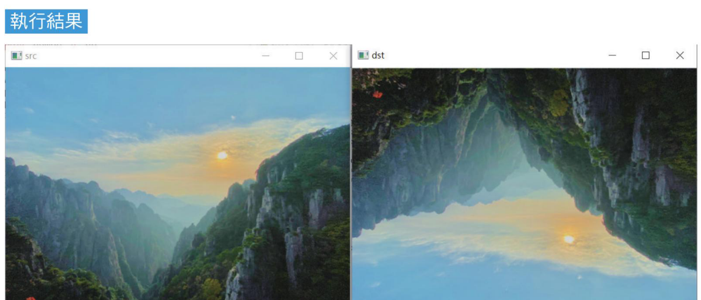
使用 mapy = rows - 1 - r 实现上下翻转，参考原书第 10-22 页。
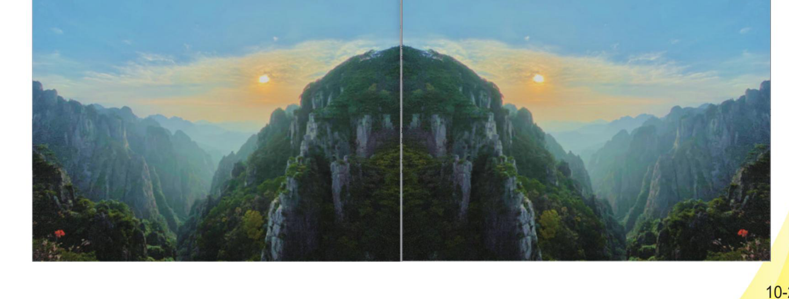
使用 mapx = cols - 1 - c 实现左右翻转，参考原书第 10-23 页。
10-5-5 与 10-5-6 缩放和压缩
重映射也能完成缩放。书中先把目标图像中间区域映射到来源图像完整区域，
外围像素则统一映射到来源图像 (0, 0)，因此外围显示为来源左上角像素的颜色。
垂直压缩则把 mapy 的来源 y 坐标放大，例如 mapy[r, c] = 2 * r，
让目标图像只采样来源图像的上半部分。
程序实例 ch10_17.py：把图像缩小到目标中央
if 0.25 * rows < r < 0.75 * rows and 0.25 * cols < c < 0.75 * cols:
mapx.itemset((r, c), 2 * (c - cols * 0.25))
mapy.itemset((r, c), 2 * (r - rows * 0.25))
else:
mapx.itemset((r, c), 0)
mapy.itemset((r, c), 0)
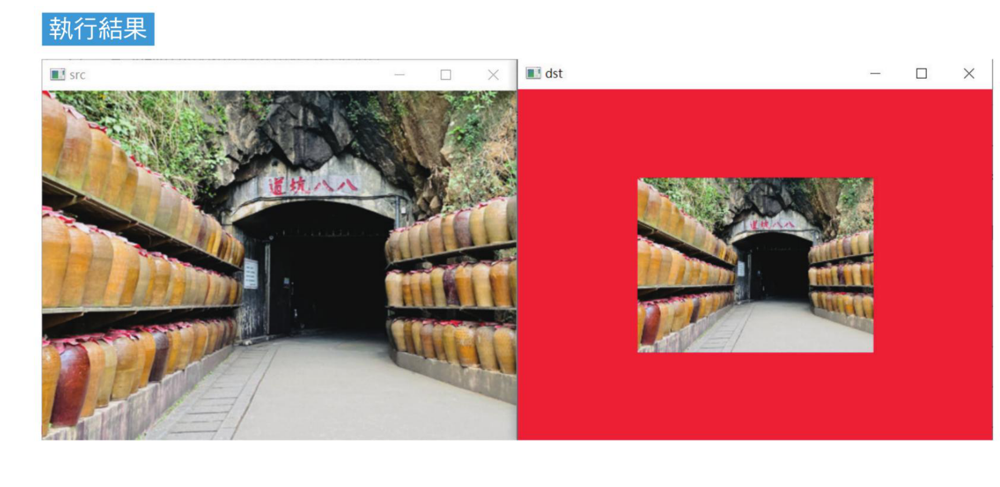
中间区域显示缩小图像，外围取来源图像左上角像素，参考原书第 10-25 页。
程序实例 ch10_18.py：垂直压缩一半
mapx.itemset((r, c), c)
mapy.itemset((r, c), 2 * r)
dst = cv2.remap(src, mapx, mapy, cv2.INTER_LINEAR)
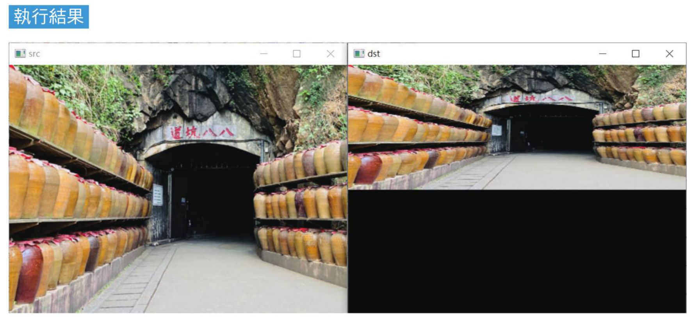
把来源 y 坐标加倍后，目标图像呈现垂直方向压缩，参考原书第 10-26 页。
1. 参考 ch10_4.py，把图像改为向上移动 100 像素、向左移动 50 像素。
2. 使用 remap() 执行水平与垂直同时翻转。
3. 使用 remap() 将 hung_square.jpg 逆时针旋转 90 度。
习题说明参考原书第 10-26 至 10-27 页。